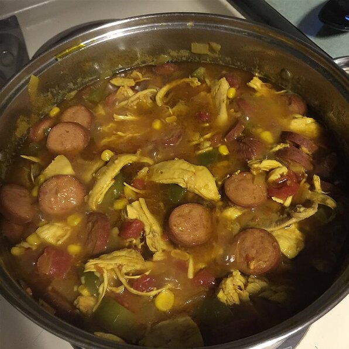

Gumbo

Description
Gumbo has a history of being made with roux, but my Mom's recipe didn't have it. Now it is my most requested item at work, tailgating parties, and at home. The vegetables really shine in this gumbo!
Ingredients
- 1 (2 to 3 pound) whole chicken
- 1 tablespoon butter
- 1 large onion, chopped
- 1 green bell pepper, chopped
- 2 stalks celery, chopped
- 3 cloves garlic, minced
- 1 (14.5 ounce) can diced tomatoes
- ½ (10 ounce) can diced tomatoes with green chilies, undrained
- 2 cups sliced andouille sausage
Steps
- Place chicken in a large pot; add enough water to cover. Cover pot and bring to a boil; reduce heat to medium-low and simmer until meat falls off the bone, about 90 minutes. Remove chicken, let cool, and shred meat; skim broth and reserve.
- Melt butter in a large skillet over medium heat; cook and stir onions, bell pepper, and celery until tender, about 5 minutes. Stir in garlic and cook until fragrant, about 1 minute. Add diced tomatoes, tomatoes with green chilies, andouille sausage, okra, corn, salt, pepper, cayenne pepper, and reserved broth; bring to a gentle boil over medium-high heat. Simmer until liquid is reduced by half, about 30 minutes.
- Mix shredded chicken and shrimp into skillet; simmer until shrimp turns bright pink and okra is tender, 5 to 7 minutes. Remove skillet from heat and stir in file powder. Serve with rice.